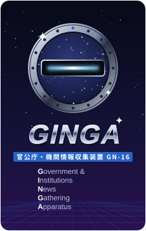

GINGA 岩手県 国の機関・大学 新着情報
2026年11月13日の更新

最終取得 09:57（日本時間） ・ 新着 8 件
最新の取得で増えた記事
盛岡地方気象台1件
- 2026年11月12日「岩手県月間地震概況2026年10月分(PDF:1204KB)」
岩手河川国道事務所1件
- 2026年11月13日入札公告(工事)を更新しました
岩手大学1件
- 2026年11月12日岩手大学学生寮 令和9年度4月新規入居者募集について【一般選抜以外】
盛岡大学5件
- 2026年11月12日採用 【採用情報】専門分野「臨床栄養学」教員公募
- 2026年11月12日採用 【採用情報】専門分野「公衆栄養学」教員公募
- 2026年11月12日採用 【採用情報】専門分野「日本古典文学[中世又は近世]」教員公募
- 2026年11月12日採用 【採用情報】専門分野「イギリス文化・文学」教員公募
- 2026年11月12日採用 【採用情報】専門分野「アメリカ文化・文学」教員公募
選択中の機関の記事はありません
更新なし
岩手労働局、三陸国道事務所、南三陸沿岸国道事務所、北上川ダム統合管理事務所、盛岡財務事務所、日本銀行盛岡事務所、東北農政局（東北6県）、岩手県立大学、岩手医科大学、いわて富士大学、国立天文台 水沢VLBI観測所、東京大学 国際沿岸海洋研究センター